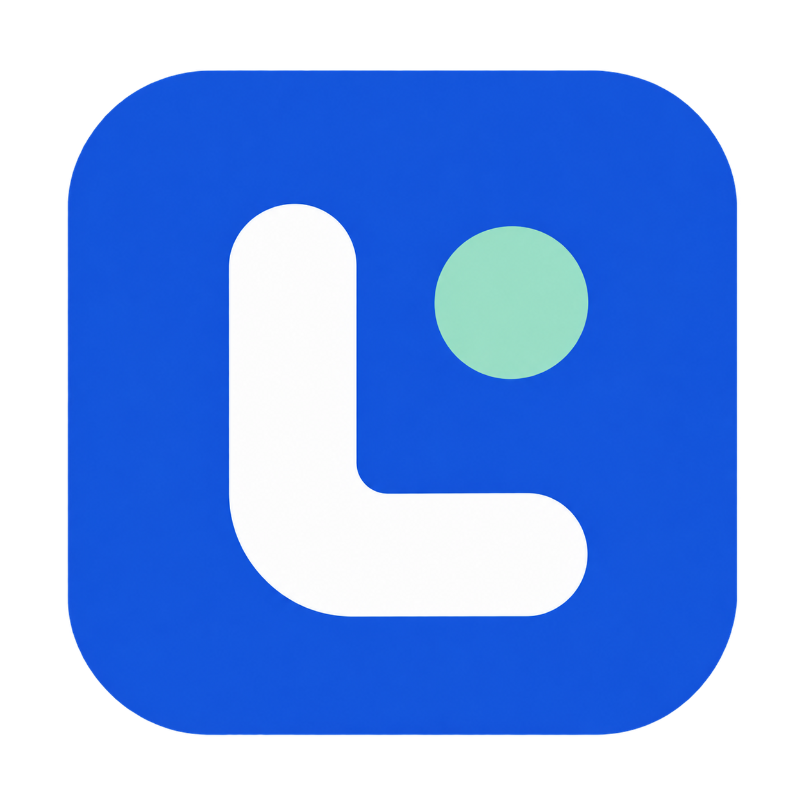

Only the work you need.
Names resolve on demand. Concurrent requests for the same value share one calculation, with cached results and failures.

lclangLazy Context Language / Python 3.14+
Define what depends on what. Let lclang calculate only what you ask for, in the context of your application.
python -m pip install lclang
__LCL_VERSION__: 1
subtotal: unit_price * quantity
shipping: 0 if subtotal >= 50 else 5
total: subtotal + shippingAsk for total. Its dependencies run first.
Ask again. The Frame reuses its cached snapshot.
Names resolve on demand. Concurrent requests for the same value share one calculation, with cached results and failures.
Parse an immutable Module once. Give each request its own Frame with host values, dependencies, and resource ownership.
Use expressions, comprehensions, functions, and async host calls. Inspect how a value was defined and which dependencies ran.
Start small
Pass values from Python. Keep the relationship in LCL. For a single synchronous expression, one call is enough.
When your configuration grows, use Modules and async Frames to share policy, cache dependencies, and close resources.
Read the quick startimport lclang
total = lclang.evaluate_sync(
"unit_price * quantity",
{"unit_price": 6, "quantity": 4},
)
assert total == 24Inside an async application, use await evaluate() or an async Frame.
Go further
A guided path through expressions, configuration, async integration, workflows, and calendars.
LOOK UPPrecise syntax, evaluation rules, public APIs, and lifecycle contracts.
CONTRIBUTEArchitecture, executable documentation, quality checks, and release instructions.
Designed for trusted application configuration. Host values and callables retain the authority your application gives them.